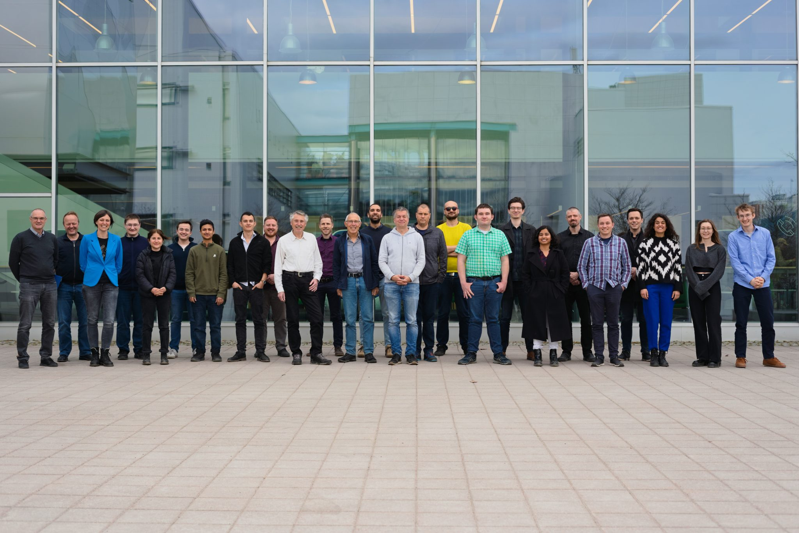

COSINUS

COSINUS is a cryogenic dark matter experiment designed as a model-independent test of the DAMA/LIBRA annual-modulation claim. It uses NaI crystals, the same target material as DAMA/LIBRA, but operates them as cryogenic calorimeters with simultaneous phonon and light readout. This enables event-by-event discrimination of interaction types while preserving the direct material comparison, allowing COSINUS to challenge or confirm the DAMA/LIBRA signal with a different detector technology.